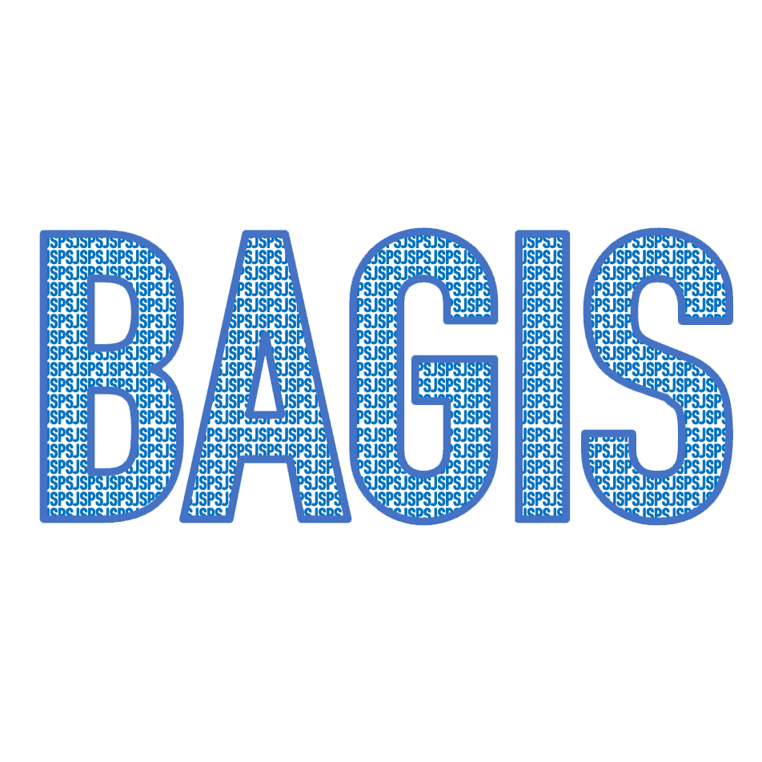

<nav class="gtco-nav" role="navigation">
<div class="gtco-container">

<div class="row">
	<div class="col-sm-2 col-xs-12">
		<div id="gtco-logo"><a href="index.html"></a></div>
	</div>
	<div class="col-sm-10 text-right menu-1">
		<ul id="gmenu">
			<li class="active"><a href="index.html">Home</a></li>
			<li class="has-dropdown"><a href="abstract-jp.html">概要</a>
				<ul class="dropdown">
					<li><a href="abstract-jp.html#basics">基本情報</a></li>
					<li><a href="abstract-jp.html#abstract">研究交流計画の目標・概要</a></li>
				</ul>
			</li>
			<li><a href="member-jp.html">メンバー</a></li>
			<li class="has-dropdown"><a href="#">海外協力機関</a>
				<ul class="dropdown">
					<li><a href="cc_thailand.html">タイ</a></li>
					<li><a href="cc_turkey.html">トルコ</a></li>
					<li><a href="cc_malaysia.html">マレーシア</a></li>
					<li><a href="cc_vietnam.html">ベトナム</a></li>
					<li><a href="cc_cambodia.html">カンボジア</a></li>
					<li><a href="cc_philippines.html">フィリピン</a></li>
					<li><a href="cc_indonesia.html">インドネシア</a></li>
				</ul>
			</li>
			
			<li><a href="activity-jp.html">活動報告</a></li>
			<li class="has-dropdown"><a href="#">シンポジウム</a>
				<ul class="dropdown">
					<li><a href="symposium2025-jp.html">BAGIS symposium 2025</a></li>
				</ul>
			</li>
			<li class="has-dropdown"><a href="#">開催済</a>
				<ul class="dropdown">
					<li><a href="symposium2024-jp.html">Satellite ICAI 2024</a></li>
					<li><a href="scvfsc2024.html">Symposium on Color Vision and Facial Skin Color</a></li>
					<li><a href="symposium2023-jp.html">Satellite ICAI 2023</a></li>
				</ul>
			</li>
				<li><a href="publication-jp.html">発表文献</a></li>
		</ul>
	</div>
	<!-- <div class="col-sm-2 col-xs-12">
		<div class="d-none d-md-block"">			
			<div>
				<a href="index.html"></a>
			</div>		
		</div> 
	</div>	 -->
</div>

</nav>
<!-- 現在のページをハイライト（アクティブ）させる処理 -->
<script>
$(function(){
	$('#gmenu li a').each(function () {
		var $href = $(this).attr('href');
		if (location.href.match($href)) {
			$(this).parent().addClass('active');;
		} else {
			$(this).parent().removeClass('active');;
		}
	});
});

</script>
